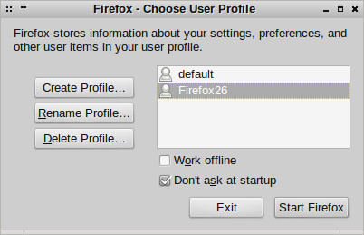

Installing Multiple Versions of Firefox
8Y3U5AJRHKZ2
So I want to test my web application using multiple versions of Firefox, especially the latest version, but I do not want to mess with my default system version (which is in fact Iceweasel :).
You can make this as over-complicated as you like. The simple way is to ignore apt and your system packaging system and run the test browser completely in user space.
The downside of this is that you will not get automatic security updates, so you have to keep an eye yourself for them and download new versions yourself. On the bright side, the browser is running as an unprivileged user and you are only testing your own site.
So you just download the archive from Mozilla. So I am using 64 bit Linux and I speak British English, so I used the following URL:
http://ftp.mozilla.org/pub/mozilla.org/firefox/releases/latest/linux-x86_64/en-GB/
You can edit the URL as appropriate and then unpack it e.g.:
tar jxf firefox*.tar.bz2
Inside the new firefox directory there is an executable named, somewhat unsurprisingly, firefox, call it in the following way:
./firefox -no-remote -P
This will pop up a little dialogue that allows you to choose the user profile, so create a new one:
You can see I have created a profile called Firefox26. In this way, the new Firefox version will not mess with the main system version. Click ‘Start Firefox’ to launch it. Having a new profile for each test version will keep things both sane and nicely decoupled.